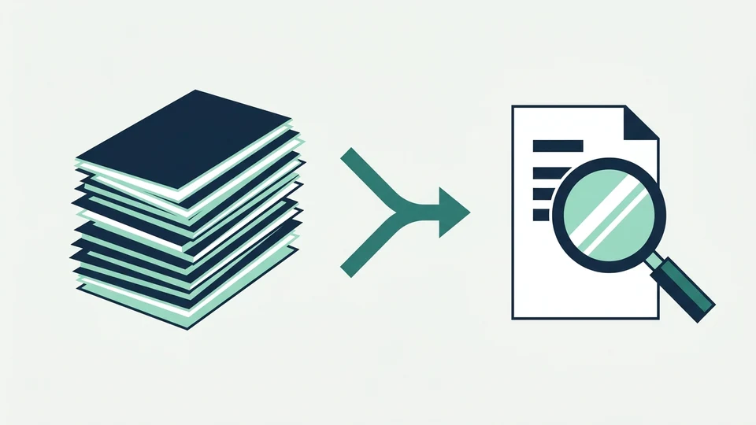

Lector y editor de PDF de escritorio, rápido y 100% local.A fast, 100% local desktop PDF reader and editor.
Pensado para trabajar con documentos, expedientes y planos sin cuentas, sin nube ni suscripciones. Abre varios archivos en pestañas, firma con certificados de Windows, aplica OCR y exporta directamente en tu equipo.
Built for working with documents, dossiers, and technical drawings without accounts, cloud uploads, or subscriptions. Open multiple files in tabs, sign with Windows certificates, run OCR, and export locally.
Sin telemetría ni nubeNo telemetry or cloudEspañol e inglésEnglish & SpanishTema claro y oscuroLight & dark themes
1 / 6
Cómo funciona por dentroHow it works under the hood
Tres pilares técnicos que diferencian a PDFiu de las webs en la nube y los editores por suscripción.
Three technical pillars that set PDFiu apart from cloud websites and subscription editors.
Privacidad real: 0 KB salen de tu PCReal privacy: 0 KB leave your PC
Desbloqueo, censura irreversible, firma y OCR se ejecutan localmente en tu CPU, sin cuentas ni límites de 3 tareas al día.
Unlocking, irreversible redaction, signing, and OCR run locally on your CPU—no accounts and no 3-task daily limits.

Comprime sabiendo antes cuánto ahorrasCompress knowing your savings upfront
Estima el ahorro antes de procesar, limpia datos ocultos e imágenes ICC/CMYK/SMask y compara al 100 % antes de guardar.
Estimate savings before running, strip hidden bloat and ICC/CMYK/SMask images, and compare side by side at 100% before saving.
Firma legal, firma visual y revisiónLegal signing, visual stamps & review
Firma uno o varios PDF con tu certificado (RSA/ECDSA) o estampa tu rúbrica desde PNG/JPG/PDF, y compara dos versiones en color.
Sign single or batch PDFs with your certificate (RSA/ECDSA) or stamp a signature from PNG/JPG/PDF, and compare two versions with color diffs.
Herramientas prácticas para trabajo realPractical tools for real document work
Todo se procesa en tu disco con bibliotecas nativas rápidas (PDFium, Tesseract, pyHanko y Qt).
Everything runs locally on your machine using fast native libraries (PDFium, Tesseract, pyHanko, and Qt).
Lectura, pestañas y doble páginaReading, tabs & two-page view
Arrastra una pestaña fuera para abrirla en otra ventana, lee a doble hoja, alterna entre tema claro y oscuro, filtra marcadores largos y busca cualquier texto o comando en segundos.
Drag any tab out into a new window, read two pages side by side, switch between light and dark themes, filter long bookmark trees, and find text or commands in seconds.
Organizar, unir y dividir PDFOrganize, merge & split PDFs
Reordena, gira o elimina páginas arrastrando en cuadrícula, une varios PDF con índice automático, extrae rangos, divide cada N hojas o maqueta varias páginas por hoja.
Drag-and-drop reorder, rotate, or delete pages in a grid, merge multiple PDFs with an outline index, extract ranges, split every N pages, or arrange multiple pages per sheet.
Comprimir PDF sin subir nadaLocal PDF compression
3 niveles sencillos (Baja, Recomendada y Extrema) más opciones avanzadas: imágenes ICC/CMYK/SMask, escala de grises, limpieza de metadatos, estimación previa y comparación visual al 100%.
3 simple levels (Low, Recommended, Extreme) plus advanced options: ICC/CMYK/SMask images, grayscale, metadata/bloat cleanup, size estimator, and 100% visual comparison.
Editar, anotar y formulariosEdit, annotate & forms
Edita texto compatible, añade texto nuevo, rellena formularios AcroForm, inserta encabezados, pies y numeración, y revisa con resaltados, notas, formas y panel de anotaciones.
Edit supported text, add new text, fill AcroForm fields, insert headers, footers, and page numbers, and review with highlights, sticky notes, shapes, and an annotations panel.
Firma digital (RSA/ECDSA) y firma visualDigital (RSA/ECDSA) & visual signing
Firma PAdES individual o múltiple en lote con certificados de Windows o .pfx/.p12, o estampa tu firma visual desde PNG, JPG o PDF eliminando el fondo blanco automáticamente.
Single or batch PAdES signing with Windows certificates or .pfx/.p12 files, or stamp a visual signature from PNG, JPG, or PDF with automatic white-background removal.
Proteger, desbloquear y censurarProtect, unlock & redact
Desbloquea copias editables, protege con contraseña AES-256, censura eliminando el contenido real (con OCR opcional) y prepara copias limpias sin metadatos para compartir.
Unlock editable copies, encrypt with AES-256 passwords, permanently redact underlying content (with optional OCR), and prepare clean metadata-free copies for sharing.
OCR local y exportaciónOffline OCR & export
Reconoce texto en español e inglés sin conexión con Tesseract y exporta a Word (.docx), Excel (.xlsx), CSV, Markdown con vista previa, TXT, PNG, PDF/A o copia cualquier página como imagen.
Run offline English and Spanish OCR with Tesseract and export to Word (.docx), Excel (.xlsx), CSV, Markdown with preview, TXT, PNG, PDF/A, or copy any page as an image.
Planos, escalas e impresiónDrawings, scales & printing
Compara revisiones en paralelo, superpuestas o resaltando diferencias, calibra escalas 1:N, mide distancias y superficies, e imprime con vista previa, mosaico y folleto.
Compare revisions side by side, overlaid, or with color-coded diffs, calibrate 1:N scales, measure distances and areas, and print with preview, tiled sheets, and booklets.
Ctrl+KPaleta de comandosCommand paletteCtrl+FBúsqueda rápidaQuick findCtrl+2Doble páginaTwo-page viewCtrl+SGuardar directoDirect saveCtrl+,Preferencias y temaPreferences & theme
Guía visual: cada herramienta en acciónVisual guide: every tool in action
Capturas reales de PDFiu en castellano y en inglés (cambia el idioma arriba para ver la interfaz en el idioma que prefieras).
Real PDFiu screenshots in both English and Spanish—toggle the language button at the top to see the localized UI.
01 · Lectura y visor01 · Reading & viewer
Barra flotante (HUD), enlaces destacados y modo EnfoqueFloating HUD bar, smart link pills & Focus mode
Navega sin distracciones: la cápsula inferior permanece tenue mientras lees y sube al 100 % al acercar el ratón. Los índices internos muestran la página destino al pasar el cursor.
Read without clutter: the bottom HUD stays subtle while reading and wakes to 100% on hover. Internal TOC links highlight cleanly with a floating destination page badge.
Cambia de página, elige zoom rápido o activa Ancho, Página, Doble y Girar desde el HUD.
Pulsa F9 para entrar o salir suavemente del modo Enfoque.
Pasa el ratón por cualquier índice del PDF y haz clic para saltar al instante.
Jump pages, pick zoom presets, or toggle Width, Page, Two-page, and Rotate right from the HUD.
Press F9 to smoothly glide in and out of Focus mode.
Hover any internal PDF link or table of contents entry to preview the target page and jump in one click.
Compresión PDF inteligente con estimador previoSmart PDF compression with upfront size estimator
Reduce archivos pesados de 20 MB a menos de 2 MB sin perder texto nítido ni líneas vectoriales, procesando imágenes ICC, CMYK, JPX y máscaras alfa SMask.
Shrink heavy PDFs from 20 MB down to under 2 MB while keeping crisp text and vectors—handling ICC, CMYK, JPX, and SMask alpha images locally.
Abre Documento → Comprimir PDF… y elige Baja, Recomendada o Extrema.
Pulsa Estimar tamaño para comprobar el ahorro real antes de guardar.
Despliega Opciones avanzadas si quieres escala de grises o limpiar metadatos.
Open Document → Compress PDF… and pick Low, Recommended, or Extreme.
Click Estimate size to verify the real savings before writing the file.
Expand Advanced options for grayscale conversion or metadata stripping.
Estampa tu firma o sello desde PNG, JPG, WebP o PDFStamp your handwritten signature or seal from PNG, JPG, or PDF
Perfecto cuando solo necesitas estampar tu rúbrica escaneada o un sello de empresa sin fondo blanco y manteniendo el texto del PDF intacto.
Ideal when you simply need to place a scanned signature or company stamp with automatic transparent background removal while keeping PDF text selectable.
Pulsa Firmar → Firma visual (imagen/PDF)… y selecciona tu archivo.
Deja activado Quitar fondo blanco automáticamente y revisa la vista previa.
Pulsa Colocar en el PDF, arrastra el recuadro en la página y listo (con Ctrl+Z).
Click Sign → Visual signature (image/PDF)… and pick your file.
Keep Remove white background automatically checked and check the live preview.
Click Place on PDF, drag a rectangle on the page, and undo anytime with Ctrl+Z.
¿Quieres dominar todas las funciones al detalle?Want the full step-by-step manual?
Consulta la guía de usuario completa en 10 capítulos: OCR local, exportación a Word/Excel/PDF-A, formularios, censura irreversible, verificación de certificados y tabla de atajos.
Read the complete 10-chapter User Guide: local OCR, Word/Excel/PDF-A export, forms, irreversible redaction, certificate verification, and full keyboard shortcuts.
El código fuente es abierto bajo MIT y puedes compilarlo gratis; el instalador oficial financia el desarrollo, la firma de código y las actualizaciones.
The source code is open under MIT and free to build; the official installer funds ongoing development, code signing, and updates.
Desde el código fuenteFrom source code
Gratis · Licencia MIT · Python 3.12Free · MIT License · Python 3.12
Acceso completo al repositorio público y sus 30 tests automáticos.
Receta incluida para compilar tu propio paquete en Windows x64 o macOS.
Ideal para desarrolladores, auditoría de código o contribuciones.
Full access to the public repository and its 30 automated tests.
Includes build recipe for Windows x64 and macOS.
Ideal for developers, auditing, and contributions.
Licencias, marca y cumplimiento LGPLv3Licenses, brand & LGPLv3 compliance
El código fuente original de PDFiu se distribuye bajo la licencia MIT. El nombre PDFiu y los logotipos en assets/brand/ están reservados (política de marca).